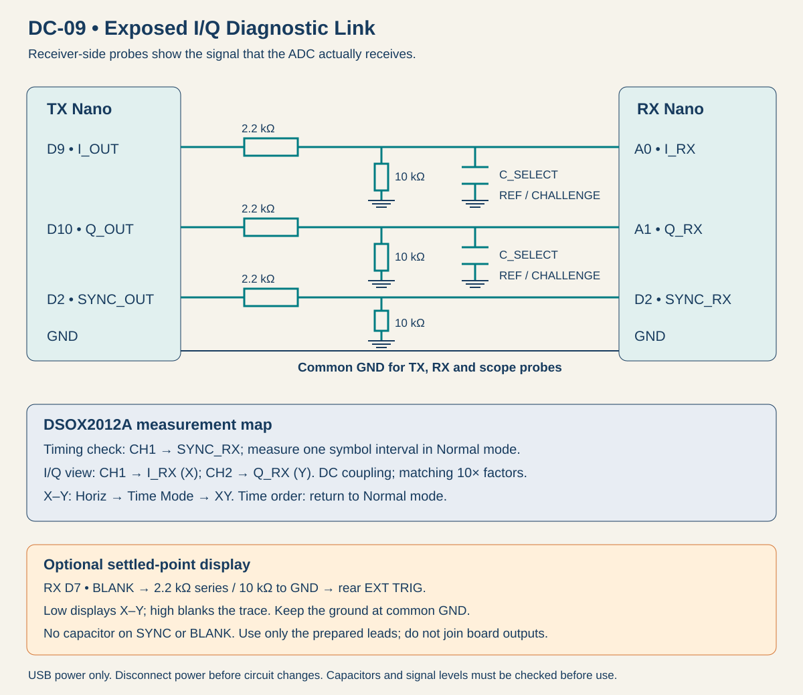

Laboratory
Lab 09 · Week 9 · October 30, 2026
Intercept the Link CTF
Continue the DC-08 door-system assessment: intercept an access-panel link, recover a maintenance message, and restore service after a line-filter change
Learning Outcomes
By the End of This Lab
- Use two scope inputs to distinguish I/Q symbol states from voltage-versus-time traces
- Determine symbol timing and translate an ordered symbol sequence into message bits
- Recover a flag from an exposed, unencrypted physical connection
- Compare sampled bit errors and mapped bit rate while changing one allowed control
- Separate reliable delivery from confidentiality, authentication and freshness
The Assignment
Your Mission
- Your DC-08 assessment exposed weaknesses in the door receiver. The security team now asks you to investigate the DC-09 connection between an access panel and its door controller.
- The vendor claims its unfamiliar signaling format keeps service messages private. You have access to a diagnostic connector and a recovered service schematic. Determine how the link communicates and recover a maintenance message as evidence for your assessment.
- During a later maintenance update, a replacement line filter disrupts communication. Investigate the changed signals and restore reliable delivery without bypassing the filter. Capture the interception and recovery flags, with evidence showing how you earned them.
- The interface carries four-state baseband symbol coordinates. It is a wired connection; no radio carrier or RF demodulator is involved.
Before You Connect
Preparation
- Review I/Q, symbol rate, mapped bit rate, sampling margin, intersymbol interference and BER.
- Open the Lab 9 report. Use separate serial-monitor windows for the labeled TX and RX USB ports, both at 115200 baud, 8-N-1, with Newline selected. The TX console controls the allowed transmitted rates; RX controls its sampling and decisions.
- Open the DC-09 link workbench for the schematic, bit mapper and console reference. Use HELP on each console. Do not replace the firmware or read source files to obtain flags.
- The receiver reports decoded data and known-pattern error counts. The scope displays voltages; it does not calculate BER for this activity.
Student Resources
Report and Wiring Diagram

The Investigation
Capture the Flags
1. Reconnaissance — Table 1
- Investigate the exposed connection between the access panel and door controller. Identify the TX/RX devices, signal connections and initial channel position using the recovered wiring schematic; ask before moving an unfamiliar connection.
- The transmitter starts stopped. After the connection is checked, use START on TX to begin the signal stream. HOLD can keep one state steady for a voltage check; use START to resume.
- In Normal time mode, observe SYMBOL_SYNC and determine the symbol interval. Do not assume the period of an arbitrary I or Q data pattern equals one symbol interval.
- Observe I_RX and Q_RX in time, then connect I_RX to Channel 1 and Q_RX to Channel 2. Use DC coupling with matching probe factors. Press Horiz, choose Time Mode, then XY; adjust channel scale and position to view the state groups.
- Determine the number of stable states and the observed low/high ranges on each axis. Raw X–Y mode can include paths between points. Use the prepared blanking lead only as directed; do not treat those paths as extra allowed states.
- Record the observations in Table 1 and calculate bits per symbol and mapped bit rate. Use a consistent scale and label the measurement point.
2. Intercept the Message — Table 2
- Test the vendor's claim about private service traffic. Recover the maintenance message from the exposed link and preserve the interception flag as evidence.
- The static X–Y plot reveals the available states, but it does not preserve message order. Capture eight consecutive symbols at a byte boundary in Normal time mode. Enter your observed states into the workbench; record its bit pairs, two hex bytes and text or control-byte meaning alongside your capture.
- Use receiver HELP to inspect its rate, sampling-phase and threshold controls. Configure the receiver from your measurements; record your attempts and its actual responses.
- Wait for the receiver's INTERCEPT stage announcement, then use RUN to compare the next complete 1,024-bit training payload. Record wrong bits, compared bits and any synchronization or frame failures separately. A receiver with no aligned data has not demonstrated zero BER.
- Recover the message through the receiver and capture the intercepted-message flag. Keep the flag and the evidence of how you recovered it in Table 2.
3. Restore the Link — Table 3
- The replacement line filter has disrupted service. Have the instructor enable the recovery message and CHALLENGE channel position. Preserve the failed condition before changing receiver settings; restore delivery with the new filter still connected.
- Compare the receiver-side pulse shapes and X–Y display with your reference. Identify what changed and one plausible explanation supported by the evidence.
- Keep the challenge network in the signal path. Evaluate the allowed symbol rates 25, 50 and 200 symbols/s. Coordinate transmitter and receiver settings; keep thresholds, sampling phase and channel position fixed for the rate comparison. If you change another setting, restore and repeat the affected comparison.
- The target is mapped bit rate of at least 80 bit/s and observed BER no greater than 0.01, using at least 1,024 aligned known-pattern payload bits in each run. A no-lock result fails; record it rather than inventing a BER.
- After the receiver announces RECOVERY, choose the fastest allowed configuration that passes both limits. Confirm it with two fresh RUN measurements under unchanged settings, record one rejected candidate, and recover the second flag from the valid recovery message. Changing configuration or stage clears the qualifying-run count.
- Record all candidate settings, counts, decisions and the recovery flag in Table 3. A flag alone does not replace the waveform evidence and measured comparisons.
4. Finish and Submit
- Complete Tables 1–3, the three evidence groups and the short conclusion. Each student submits an individual PDF report.
- Stop transmission before moving probes or channel jumpers. Restore the posted station state, close Serial Monitor, and disconnect USB as directed.
Why This Matters
- Physical access can reveal unencrypted traffic even when its waveform is unfamiliar
- A degraded channel can prevent legitimate messages from arriving correctly or on time
- A matching error check and reliable reception do not establish an authorized or fresh message
- The scope and error counts support a link diagnosis; neither establishes attacker identity or intent
Submission
- Complete the individual Lab 9 report, including all tables, both flags, three evidence groups and the conclusion; submit as a PDF through Learning Suite.